存储设备原理：一个 bit 如何跨越时间
课程：2026 春季学期《操作系统原理》
讲师：蒋炎岩（jyy）
官方课程主页：https://jyywiki.cn/OS/2026/
官方讲义：https://jyywiki.cn/OS/2026/lect23.md
视频来源：Bilibili BV1RHLh6pEqn
版权说明：课程讲义与幻灯片归蒋炎岩所有，采用 Creative Commons BY-NC 4.0 许可；本电子书是对课堂讲授的书面化重构，保留出处与许可说明。
导语：持久化就是让状态跨越时间
(参考时间: 00:00)
“持久化”并不神秘。只要存在一个能够反复读写、并且断电后仍能保持状态的结构，就可以记录一个 bit：
可写状态 = 0
可写状态 = 1
真正的挑战是如何让这个状态：
- 足够小，提高密度；
- 足够快，匹配 CPU；
- 足够稳定，跨越重启和时间；
- 足够便宜，能够大规模制造。
这张时间线从磁、坑、光一直走到电荷与集成电路。
flowchart LR
A["可改写状态"] --> B["磁"]
A --> C["坑 / 光"]
A --> D["电荷 / 电路"]
B --> E["磁带 → 磁鼓 → 磁盘 → 软盘"]
C --> F["CD / DVD / 玻璃存储"]
D --> G["Flash / SSD"]
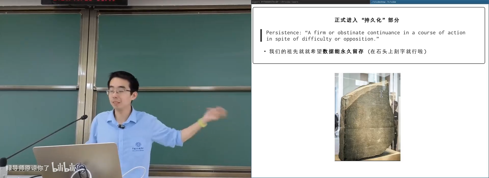
📷 从可改写状态出发理解存储设备
回到原视频 (00:04:30)
1. 从磁性画板到计算机存储
1.1 一个能写、能擦、能读的状态
(参考时间: 00:05)
磁性画板的铁粉可以被磁笔吸起，再用磁铁刷掉。人眼可以读出图案。
计算机存储的要求更高：
每一个 bit 必须能够被电信号写出，并被电信号读回。
flowchart TD
A["物理状态"] --> B{"能被读取？"}
B -- "否" --> C["无法进入计算机"]
B -- "是" --> D{"能被改写？"}
D -- "否" --> E["只读介质"]
D -- "是" --> F["可读写持久存储"]
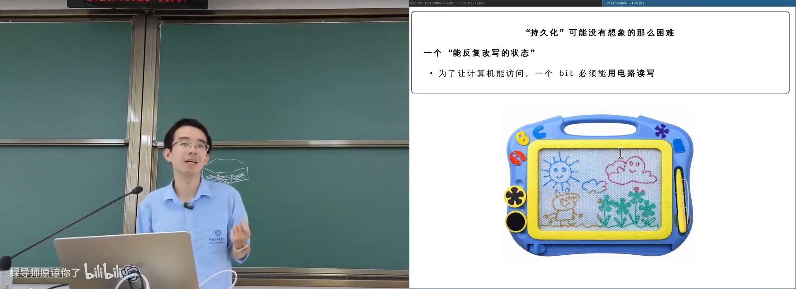
📷 磁性画板体现可反复改写的状态
回到原视频 (00:06:30)
1.2 电磁感应连接数字与物理世界
(参考时间: 00:07)
沿一条介质排列许多可磁化单元：
- 磁化方向表示 0 或 1；
- 读写头经过时切割磁感线；
- 感应电流方向用于读取；
- 强磁场用于写入。
flowchart LR
A["Write Head"] --> B["Strong Magnetic Field"]
B --> C["Magnetization Direction"]
C --> D["Stored Bit"]
D --> E["Read Head"]
E --> F["Induced Current"]
F --> G["Recovered Bit"]
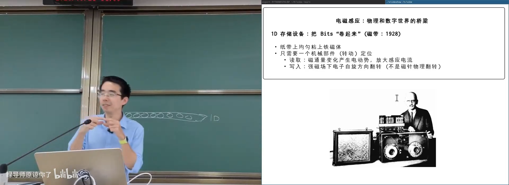
📷 电磁感应让磁场状态可以被电信号读写
回到原视频 (00:08:30)
2. 磁存储：先把 bit 排成线，再把线卷起来
2.1 磁带：一维存储
(参考时间: 00:09)
磁带出现于 1928 年，介质是均匀涂覆铁磁材料的带子。
特点：
- 制造便宜；
- 容量高；
- 长时间保存可靠；
- 顺序读写尚可；
- 随机访问极慢。
现代磁带利用高密度磁畴，可达到约 300 Gb/in²，单盘容量可到 30 TB。
flowchart LR
A["长条介质"] --> B["连续磁畴"]
B --> C["磁头顺序读取"]
C --> D["顺序性能好"]
C --> E["随机定位慢"]
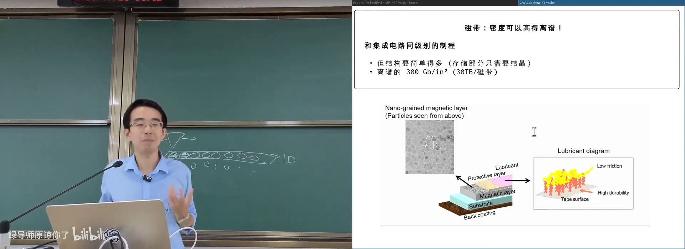
📷 磁带把大量 bit 排成一维长序列
回到原视频 (00:10:30)
2.2 随机访问短板
(参考时间: 00:12)
如果把整个磁带当作内存映射：
char *p = mmap(tape, size, ...);
p[0] = 1;
p[100000000] = 2;
第二次数数必须让磁带快速前进或倒带，等待时间可能非常长。
因此磁带适合：
- 冷数据归档；
- 长期备份；
- 音频、视频等顺序读写；
- 很少随机访问的场景。
flowchart TD
A["读取位置 A"] --> B["转动定位"]
B --> C["读取位置 B"]
C --> D{"位置方向相反？"}
D -- "是" --> E["倒带 / 长距离移动"]
E --> F["随机访问极慢"]
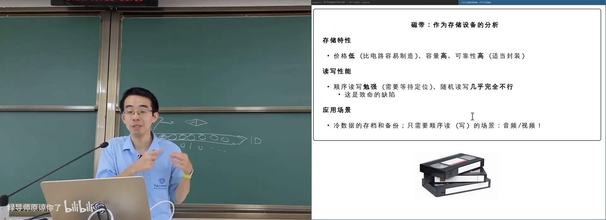
📷 一维磁带的高容量换来极高的随机访问延迟
回到原视频 (00:12:00)
2.3 磁鼓：把一维介质绕成圆
(参考时间: 00:17)
磁鼓（1932）把一维介质绕在旋转圆柱上，并放置多个读写头：
- 随机访问延迟不超过一个旋转周期；
- 读写头可以并行；
- 容量比磁带低，但随机性能明显改善。
flowchart LR
A["磁鼓"] --> B["持续旋转"]
B --> C1["Read Head 1"]
B --> C2["Read Head 2"]
B --> C3["Read Head N"]
C1 --> D["多个位置并行读取"]
C2 --> D
C3 --> D
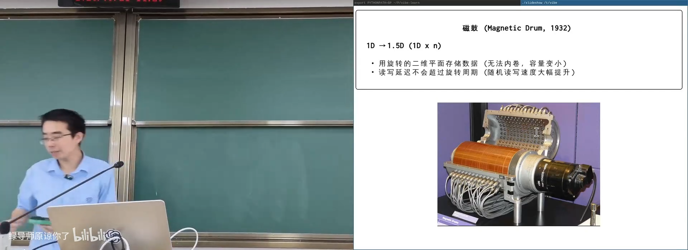
📷 磁鼓用旋转减少随机定位等待
回到原视频 (00:17:30)
2.4 磁盘：二维平面上的多层磁带
(参考时间: 00:19)
硬盘（1956）把数据写入多个盘片的双面磁道：
- 盘片高速旋转；
- 读写头沿半径方向移动；
- 多个盘片并行读写；
- 高密度、容量大、成本低。
flowchart TD
A["多个盘片"] --> B1["上表面读写头"]
A --> B2["下表面读写头"]
B1 --> C["磁道"]
B2 --> C
C --> D["旋转 + 寻道定位"]
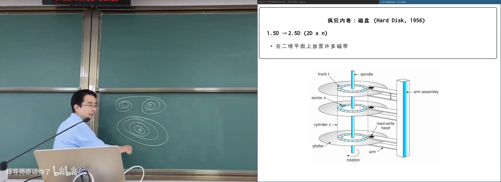
📷 磁盘通过多层盘片和磁道提高容量
回到原视频 (00:19:30)
2.5 寻道与旋转延迟
(参考时间: 00:22)
随机读取一个扇区通常要：
- 把读写头移动到目标磁道；
- 等盘片旋转到目标扇区；
- 读写数据。
7200 RPM 约等于每秒 120 转，平均旋转等待约 4.17 ms，最坏超过 8.3 ms。这些毫秒级延迟对 CPU 极其漫长。
flowchart LR
A["请求扇区"] --> B["Seek 到目标磁道"]
B --> C["等待旋转"]
C --> D["读取扇区"]
D --> E["返回上层"]
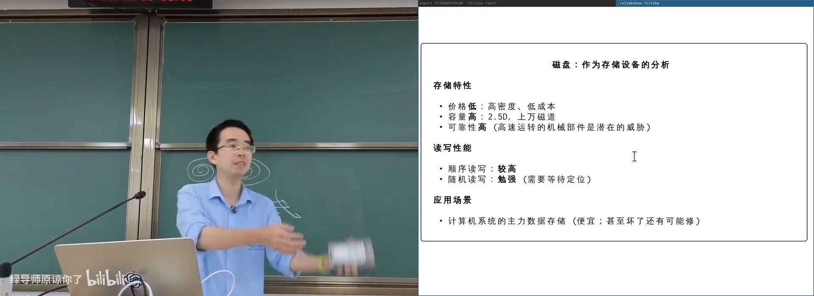
📷 磁盘随机读取包含寻道和旋转等待
回到原视频 (00:24:00)
2.6 调度与 NCQ
(参考时间: 00:26)
早期操作系统实现“电梯调度”：
- 读写头只向一个方向移动；
- 沿途处理请求；
- 到端点后再反向。
后来磁盘控制器承担更多调度：
- AHCI；
- Native Command Queuing；
- 控制器根据真实机械参数排序请求。
flowchart TD
A["多个块请求"] --> B["磁盘控制器队列"]
B --> C["按磁道位置排序"]
C --> D["电梯式批量执行"]
D --> E["减少总寻道距离"]
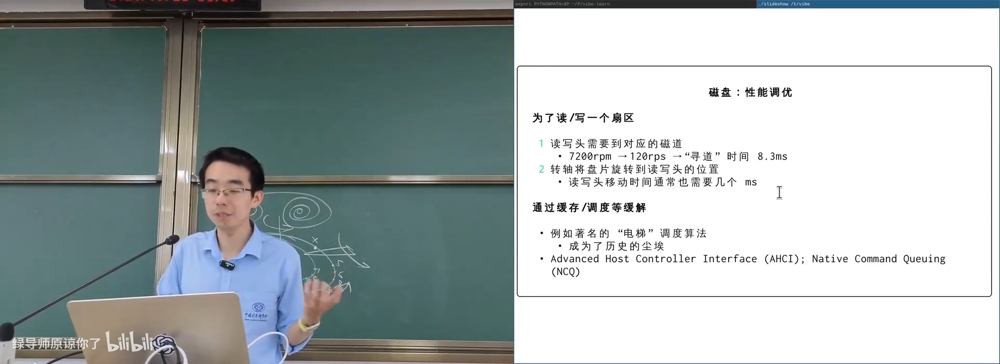
📷 磁盘控制器使用队列和调度减少寻道成本
回到原视频 (00:27:00)
2.7 软盘：可移动的磁性介质
(参考时间: 00:28)
软盘把读写头与介质分离：
- 驱动器包含磁头与电机；
- 软盘本身只是可移动介质；
- 8 英寸、5.25 英寸、3.5 英寸是主要规格。
3.5 英寸软盘加入硬塑料外壳、滑盖和写保护开关。
flowchart LR
A["Floppy Media"] --> B["插入 Drive"]
B --> C["Drive 旋转介质"]
C --> D["磁头读写"]
E["Write Protect"] --> C
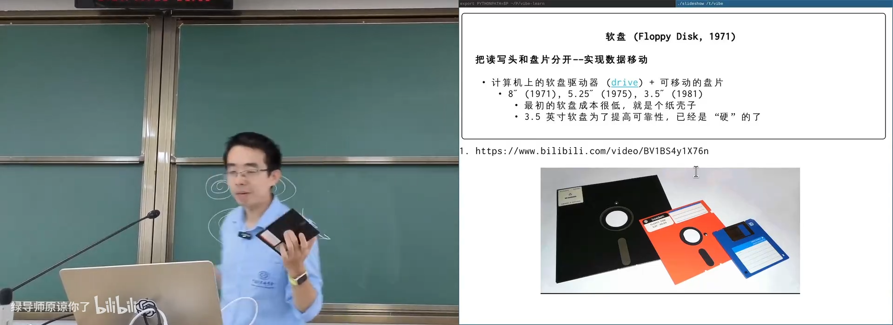
📷 软盘把可移动介质和读写机械分离
回到原视频 (00:29:30)
2.8 软盘时代的数据交换
(参考时间: 00:33)
1.44 MB 软盘曾能装下：
- 一个完整 DOS；
- BASIC 程序；
- 小型游戏；
- 驱动和更新程序。
大型软件被拆分成多张盘，提示用户更换软盘。今天的“保存”图标就是这段历史的遗迹。
flowchart TD
A["1.44 MB Floppy"] --> B["System / Program"]
B --> C["用户拔出"]
C --> D["把数据带到另一台电脑"]
D --> E["数据交换"]
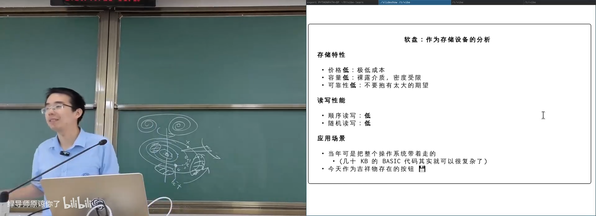
📷 软盘是互联网普及前主要的数据交换介质
回到原视频 (00:34:30)
3. 挖坑存储：从石板到光盘与玻璃
3.1 有坑为 1，无坑为 0
(参考时间: 00:36)
岩石或金属上的刻痕可以跨越千年。现代工业把这种“挖坑”缩小到微米级：
- 激光沿螺旋轨道扫描；
- 有坑与无坑产生不同反射；
- 坑深造成干涉差异；
- 光信号转成 0 和 1。
flowchart LR
A["Laser"] --> B["Optical Disc"]
B --> C{"Pit？"}
C -- "是" --> D["Diffracted Reflection"]
C -- "否" --> E["Direct Reflection"]
D --> F["Decode Bit"]
E --> F
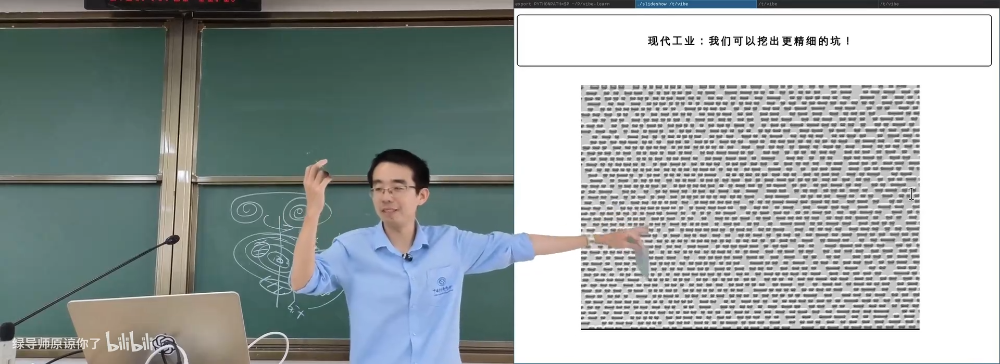
📷 CD 用激光读取微小坑槽表示数据
回到原视频 (00:37:30)
3.2 CD 与 EFM 编码
(参考时间: 00:39)
CD（1980）最初为数字音频设计，容量约 700 MB，可保存约 74 分钟音乐。
数据使用 Eight-to-Fourteen Modulation：
8 bit data → 14 bit channel code
编码增加冗余，帮助时钟恢复和纠错。
flowchart TD
A["8-bit Data"] --> B["EFM 编码"]
B --> C["14-bit Channel Bits"]
C --> D["Pit / Land Stream"]
D --> E["Laser Reading"]
E --> F["Error Correction"]
F --> G["Original Data"]
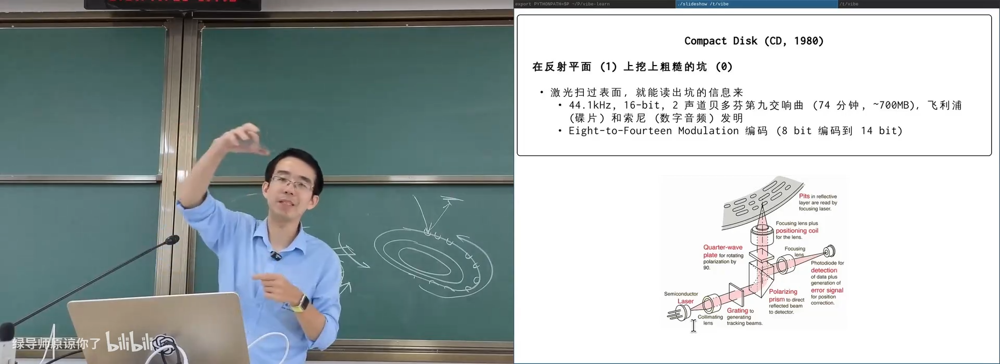
📷 光盘读取依赖光学干涉与编码纠错
回到原视频 (00:39:30)
3.3 光盘最重要优势：复制便宜
(参考时间: 00:41)
母盘做出微小凸起，再用模具压制透明塑料：
- 几秒即可复制数百 MB；
- 再镀反射膜；
- 划伤透明面通常不会影响数据层。
Blu-ray 生产甚至可达到约 33 GB/s 的等效写入速度。极端情况下，数据中心之间“用卡车运盘”也可能比网络传输更快。
flowchart LR
A["Master Disc"] --> B["Stamper"]
B --> C["Mold Transparent Plastic"]
C --> D["Pits Replicated"]
D --> E["Reflective Coating"]
E --> F["Finished Disc"]
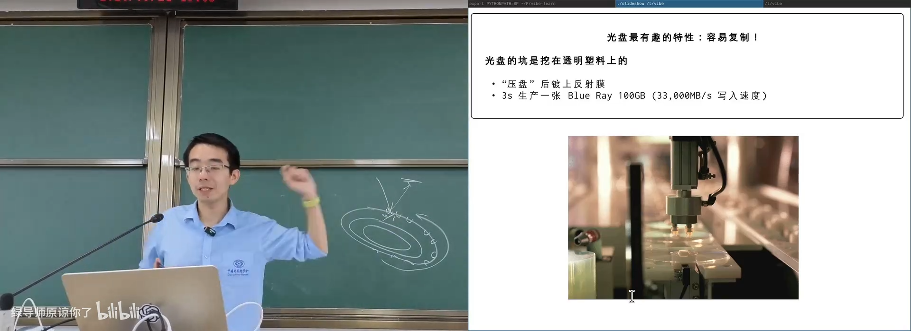
📷 光盘通过压盘实现极低复制成本
回到原视频 (00:41:30)
3.4 光盘的限制与互联网替代
(参考时间: 00:44)
光盘优点：
- 价格极低；
- 容量较高；
- 只读数据可靠性好。
缺点：
- 顺序读取尚可；
- 随机读取较差；
- 写入困难；
- CD-RW 等可写介质寿命和兼容性有限。
软件持续更新、内容即时分发，让互联网逐渐取代物理盘。
flowchart TD
A["Physical Disc"] --> B["High Copy Speed"]
A --> C["Random Write Hard"]
D["Internet"] --> E["Instant Delivery"]
D --> F["Live Updates"]
E --> G["Replace Physical Media"]
F --> G
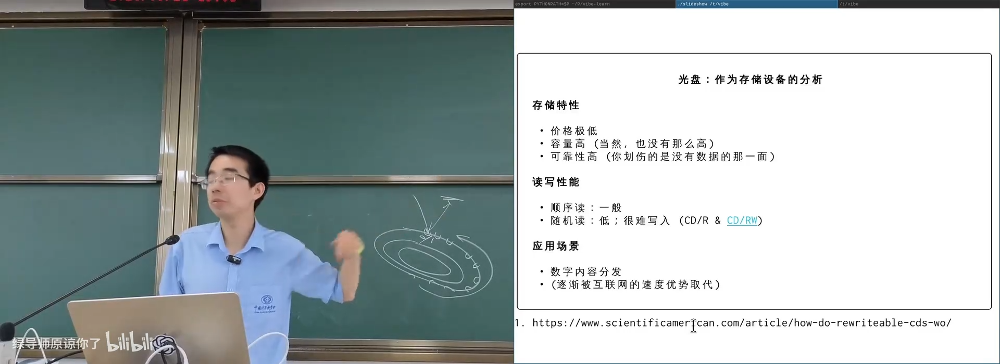
📷 互联网取代光盘成为主要内容分发渠道
回到原视频 (00:44:30)
4. Random Read + Append-only Write = 任何数据结构
4.1 追加写也可以实现随机修改
(参考时间: 00:46)
假设设备支持：
- 任意位置读取；
- 只能向尾部追加写入。
仍然可以实现任何可变数据结构：
read(address) → data
append(data) → new_address
修改数据时不覆盖旧位置，而是写入新副本，再更新指针。
flowchart LR
A["Old Node"] --> B["Read"]
C["Append New Node"] --> D["New Address"]
B --> E["Update Parent Pointer"]
D --> E
E --> F["Visible New Version"]
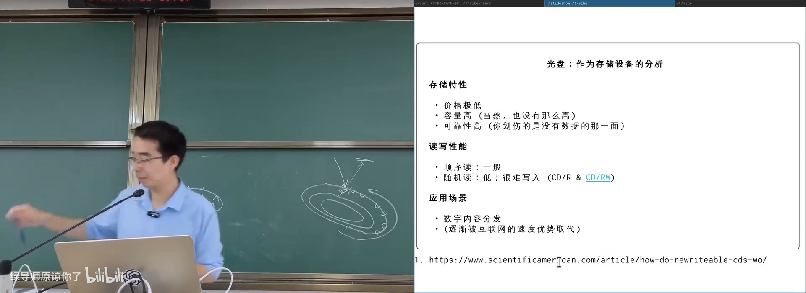
📷 追加写设备可以通过复制路径实现逻辑修改
回到原视频 (00:46:30)
4.2 Persistent Data Structure
(参考时间: 00:48)
例如修改二叉树的一个叶子：
- 复制从根到叶子的路径；
- 新节点指向旧树中未修改的子树；
- 旧根仍代表旧版本；
- 新根代表新版本。
修改成本与树高成正比，约为 O(log N)。
flowchart TD
A["Old Root"] --> B["Shared Subtree"]
C["New Root"] --> D["New Copy"]
D --> E["New Leaf"]
D --> B
A --> F["Old Version"]
C --> G["New Version"]
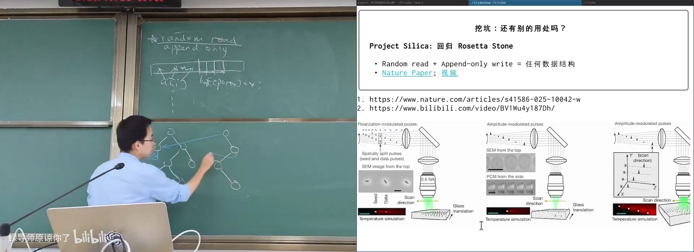
📷 路径复制让追加写设备保存多个数据结构版本
回到原视频 (00:49:30)
4.3 Project Silica
(参考时间: 00:51)
Project Silica 用飞秒激光在玻璃内部写入微小结构：
- 随机读取；
- 只能追加写；
- 机器人从架子上取出玻璃并定位数据；
- 长期归档。
flowchart LR
A["Laser"] --> B["Glass Volume"]
B --> C["Voxel State"]
C --> D["Persistent Data"]
D --> E["Robot Archive"]
E --> F["Random Read"]
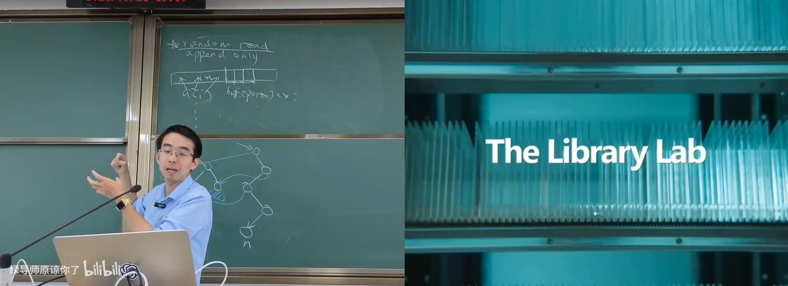
📷 Project Silica 用玻璃和机器人实现长期归档
回到原视频 (00:52:30)
5. Flash：用电荷存储 bit
5.1 Floating Gate
(参考时间: 00:54)
Flash 在晶体管中增加 Floating Gate：
- 注入电子：一个状态；
- 放出电子：另一个状态；
- 通过阈值电压判断 bit。
通过精确控制电荷量，一个 cell 可以保存多 bit：
- SLC：1 bit；
- MLC：2 bit；
- TLC：3 bit；
- QLC：4 bit。
flowchart TD
A["Floating Gate"] --> B{"Charge Level"}
B --> C1["Level 0"]
B --> C2["Level 1"]
B --> C3["Level 2"]
B --> C4["Level 3"]
C1 --> D["Decoded Bits"]
C2 --> D
C3 --> D
C4 --> D
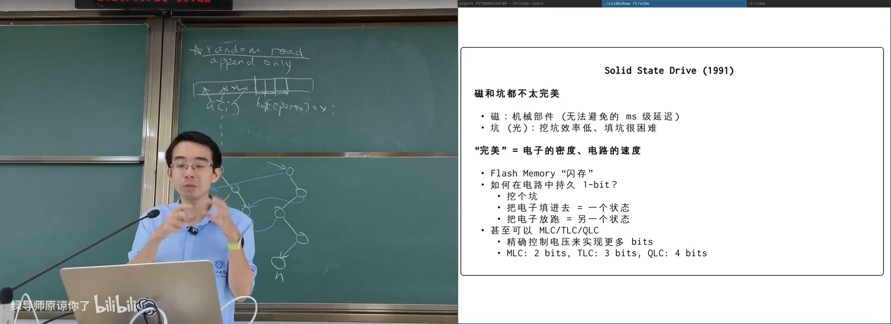
📷 Flash 用 Floating Gate 电荷量表示一个或多个 bit
回到原视频 (00:55:30)
5.2 SSD 的“不讲道理”优势
(参考时间: 00:57)
Flash 的优势：
- 大规模集成电路带来低成本；
- 封装可靠，不怕摔、不怕水；
- 电路天然并行；
- 容量越大，颗粒越多，带宽越高。
Jim Gray 在 2006 年预言：
Tape is Dead, Disk is Tape, Flash is Disk, RAM Locality is King.
flowchart LR
A["更多 Flash Chips"] --> B["更多并行通道"]
B --> C["更高带宽"]
A --> D["更大容量"]
C --> E["SSD Performance Scales"]
D --> E
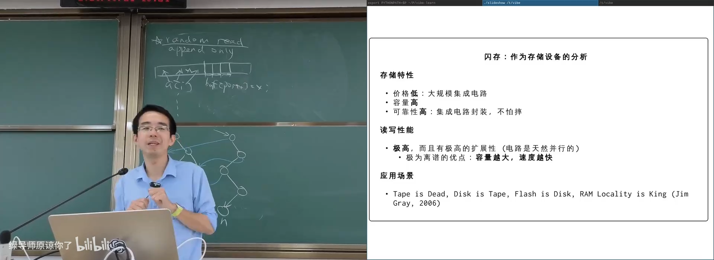
📷 Flash 的并行颗粒让容量增长同时提高带宽
回到原视频 (00:57:30)
5.3 U 盘时代
(参考时间: 00:59)
USB Flash Drive 把 Flash 芯片和 USB 接口封装在同一设备中，取代软盘进行数据交换。
早期容量：
- 软盘：1.44 MB；
- 早期 U 盘：128 MB。
一个 U 盘就能携带几十到上百倍的数据。
flowchart LR
A["Floppy 1.44 MB"] --> B["USB Flash Drive"]
B --> C["128 MB / GB+"]
C --> D["图片 / 视频 / 软件"]
D --> E["人际数据交换"]
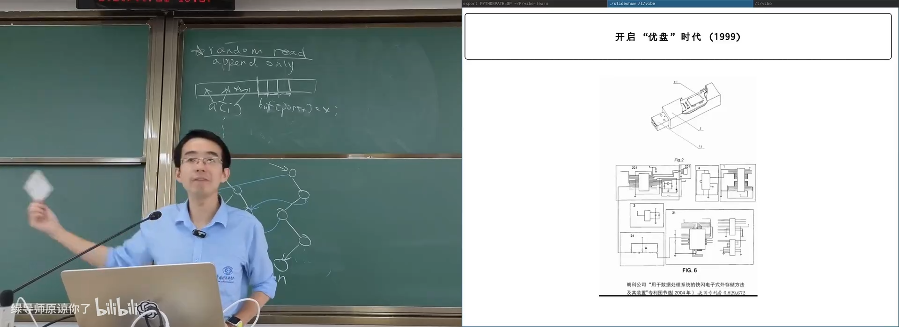
📷 U 盘把 Flash 变成随身携带的高速介质
回到原视频 (00:59:30)
5.4 Erase Saturation 与写寿命
(参考时间: 01:01)
写入和擦除带来不可逆磨损：
- 擦除无法完全清除电子；
- 数千到数万次后，cell 接近“永远充电”状态；
- QLC 可能只有约 1000 次写入寿命。
for (int i = 0; i < 1000; ++i)
write_text("a.txt", i);
如果软件不做处理，一个文件反复修改就可能磨损固定 cell。
flowchart TD
A["Write / Erase"] --> B["残余电子"]
B --> C["Threshold Drift"]
C --> D["Erase Failure"]
D --> E["Dead Cell"]
F["Repeated Writes"] --> A
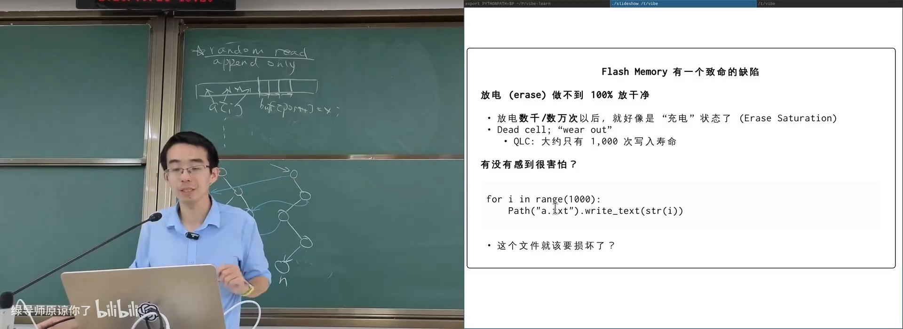
📷 Flash 擦除不彻底，反复写入会耗尽 cell
回到原视频 (01:01:30)
6. 软件定义磁盘：FTL 与 Wear Leveling
6.1 FTL 维护逻辑到物理映射
(参考时间: 01:02)
SSD 内部软件层称为 Flash Translation Layer：
- 操作系统看到的是连续逻辑块；
- FTL 将逻辑块映射到物理 Flash 块；
- 每次写入可以分配到不同物理块；
- 旧块延迟回收。
flowchart LR
A["Logical Block 1"] --> B["L2P Table"]
B --> C1["Physical Block 1"]
B --> C2["Physical Block 7"]
B --> C3["Physical Block 9"]
C1 --> D["Flash Array"]
C2 --> D
C3 --> D
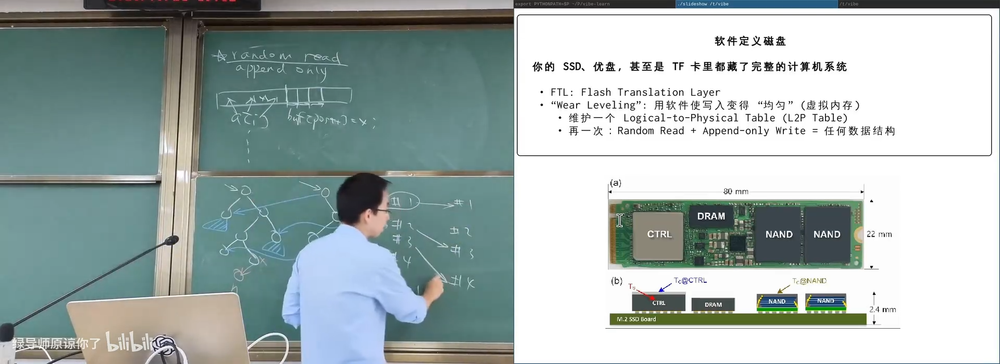
📷 FTL 通过逻辑到物理映射隐藏 Flash 块变化
回到原视频 (01:03:30)
6.2 Wear Leveling
(参考时间: 01:04)
FTL 记录每个物理块的写入次数，优先使用写入较少的块：
write logical block 1
↓
do not overwrite physical block 1
↓
allocate less-worn physical block 7
↓
update L2P table
这与虚拟内存很像：逻辑地址不变，物理位置变化。
flowchart TD
A["Logical Write"] --> B["查看 Physical Wear Count"]
B --> C["选择写入较少的 Block"]
C --> D["追加写入新数据"]
D --> E["更新 L2P Table"]
E --> F["回收旧 Block"]
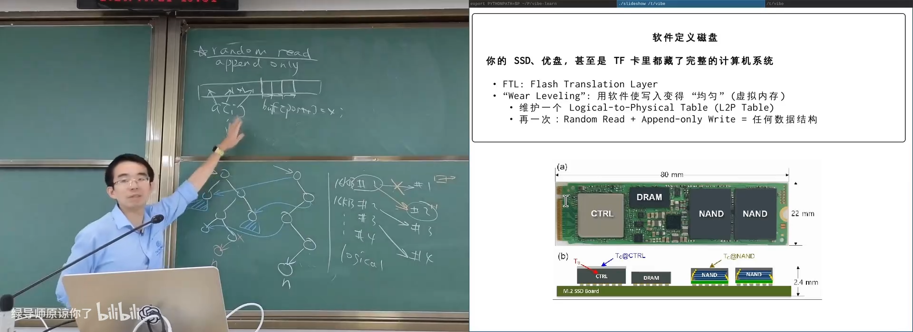
📷 Wear leveling 把写操作均匀分散到所有 Flash 块
回到原视频 (01:04:30)
6.3 SSD 内部就是一台计算机
(参考时间: 01:06)
SSD 封装中通常包含：
- Flash 颗粒；
- 主控 CPU；
- DRAM；
- 缓存；
- Store Buffer；
- FTL 软件。
SD 卡、TF 卡同样可能包含完整嵌入式系统。
flowchart TD
A["SSD Controller"] --> B["CPU"]
A --> C["DRAM / Cache"]
A --> D["FTL Software"]
A --> E["NAND Flash"]
A --> F["Host Interface"]
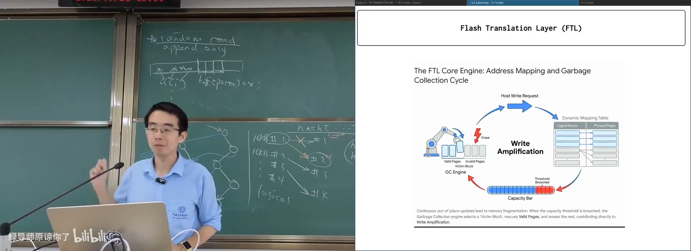
📷 SSD 是包含 CPU、内存、软件和 Flash 的完整系统
回到原视频 (01:06:30)
6.4 廉价设备可能伪造容量
(参考时间: 01:07)
设备和驱动通过协议交换信息。既然容量是协议返回值，就可能被伪造：
真实容量 = 64 GB
主控返回 = 1 TB
超过 64 GB 的写入 = 丢弃
刚写入少量数据时看似正常，写满后数据会丢失。
flowchart TD
A["Host 写入 1TB SSD"] --> B["Fake Controller"]
B --> C{"地址 < 64GB？"}
C -- "是" --> D["写入真实 Flash"]
C -- "否" --> E["丢弃数据"]
D --> F["短期看似正常"]
E --> F
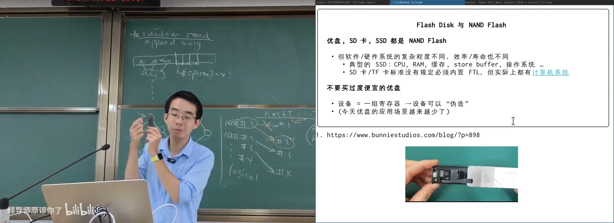
📷 伪造主控可以报告异常大的虚假容量
回到原视频 (01:07:30)
7. 操作系统视角：Block Device
7.1 寻址是有代价的
(参考时间: 01:09)
不同介质的定位方式不同：
- 磁盘：读写头寻道 + 盘片旋转；
- 光盘：激光头定位；
- Project Silica：机器人 + 光学定位；
- Flash：Die、Plane、Block、Page 选通。
flowchart TD
A["存储介质"] --> B["Disk: Mechanical Seek"]
A --> C["Optical: Laser Positioning"]
A --> D["Glass: Robot + Optics"]
A --> E["Flash: Die / Plane / Block / Page"]
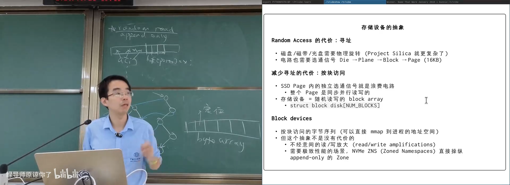
📷 所有随机访问设备都必须解决寻址成本
回到原视频 (01:10:30)
7.2 按块访问减少选通电路
(参考时间: 01:10)
让一个 Page 或 Sector 内的大量 bit 共享定位与选通电路：
- SSD Page 通常约 16 KB；
- Erase Block 可能数 MB；
- 磁盘 Sector 通常 512 B 或 4 KB。
flowchart LR
A["Random Address"] --> B["Select Block / Page"]
B --> C["Parallel Read Entire Page"]
C --> D["Return Block Data"]
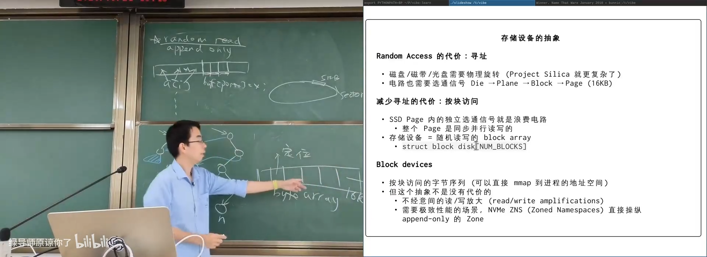
📷 按块访问省去了为每一个 bit 单独寻址的电路
回到原视频 (01:12:30)
7.3 Block Array 抽象
(参考时间: 01:13)
操作系统看到：
struct block disk[NUM_BLOCKS];
上层可以：
- 读取第
i个块； - 写入第
j个块； - 一次读写连续多个块。
flowchart TD
A["File System"] --> B["Block Device"]
B --> C1["Read Block 3"]
B --> C2["Write Block 8"]
B --> C3["Read Blocks 10..20"]
C1 --> D["Storage Hardware"]
C2 --> D
C3 --> D
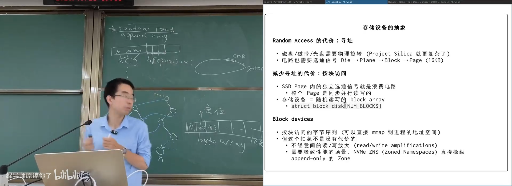
📷 块设备把存储抽象成可随机访问的 block array
回到原视频 (01:13:30)
7.4 读写放大
(参考时间: 01:14)
如果只修改一个字节，但设备最小单位是 4 KB 或 16 KB：
read 16 KB block
modify 1 byte
write 16 KB block back
这会产生：
- 读放大：读入了很多不需要的字节；
- 写放大：为了一个字节写回整块；
- Flash 额外放大：垃圾回收时搬运有效页。
flowchart LR
A["Write 1 Byte"] --> B["Read 16KB Block"]
B --> C["Modify Byte"]
C --> D["Write 16KB Block"]
D --> E["Read / Write Amplification"]
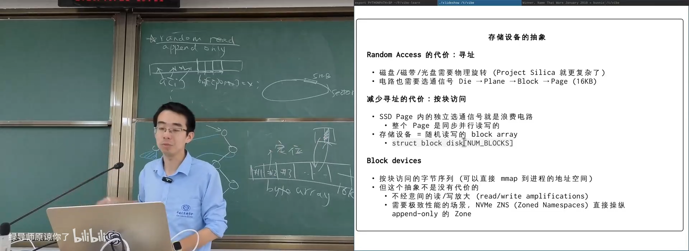
📷 小块误用大块接口会带来读写放大
回到原视频 (01:14:00)
7.5 block_device_operations
(参考时间: 01:15)
Linux 为存储设备提供块设备接口：
struct block_device_operations {
int (*open)(struct block_device *, fmode_t);
void (*release)(struct gendisk *, fmode_t);
int (*ioctl)(struct block_device *, fmode_t, unsigned, unsigned long);
// ...
};
驱动还需要配置 request_queue，负责把块请求排入设备队列。
一旦实现块读写，文件系统就可以在上面提供：
read；write；mmap；- 文件与目录。
flowchart LR
A["read / write / mmap"] --> B["File System"]
B --> C["Block Layer / request_queue"]
C --> D["block_device_operations"]
D --> E["Storage Device"]
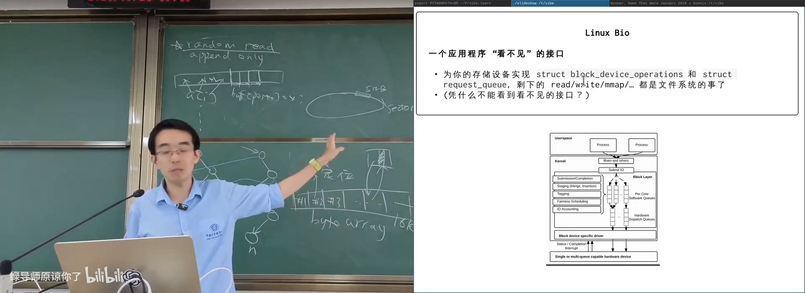
📷 文件系统把块设备接口进一步抽象成文件与 mmap
回到原视频 (01:15:30)
7.6 NVMe ZNS
(参考时间: 01:14)
传统块设备隐藏 Flash 内部的追加写和擦除特性，软件难以避免额外搬运。NVMe Zoned Namespaces 暴露分区顺序写模型：
- Zone 内顺序写；
- Zone 整体重置；
- 上层主动管理数据布局；
- 减少 FTL 和垃圾回收开销。
flowchart TD
A["Traditional Block Device"] --> B["FTL Hides Append-only"]
B --> C["GC / Write Amplification"]
D["ZNS"] --> E["Expose Zones"]
E --> F["Sequential Writes"]
F --> G["Host Controls Layout"]
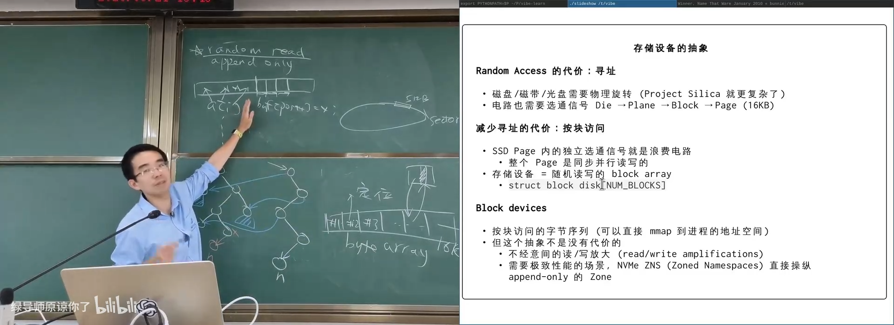
📷 ZNS 直接暴露追加写 Zone，减少隐藏开销
回到原视频 (01:14:30)
8. 打开 Linux Block I/O
8.1 从 first principles 观察块读写
(参考时间: 01:15)
操作系统本身也是程序。既然块 I/O 由内核代码执行，就可以插入探针记录：
- 谁发起 I/O；
- 读还是写；
- 读写多少块；
- 延迟是多少；
- 哪个进程产生最多 I/O。
课程借助 AI 使用 eBPF 实现了一个块 I/O 可视化工具。
flowchart TD
A["Application"] --> B["File System"]
B --> C["Block I/O"]
C --> D["eBPF Probe"]
D --> E["Event Stream"]
E --> F["Visualization Tool"]
F --> G["Read / Write / Latency"]
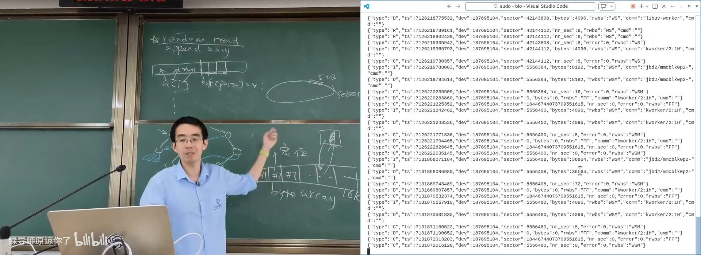
📷 用 eBPF 在内核中观察块 I/O 事件
回到原视频 (01:17:30)
8.2 观察 find 与写文件
(参考时间: 01:18)
实验：
find /
dd if=/dev/zero of=a.txt bs=1M count=100
工具展示：
- 蓝色事件：读；
- 黄色事件：写；
- 橙色事件：同步；
- 每个进程的 I/O 延迟分布；
- 哪些进程产生最多块 I/O。
flowchart LR
A["find /"] --> B["大量 Read"]
C["dd 写文件"] --> D["大量 Write"]
B --> E["Block I/O Events"]
D --> E
E --> F["Latency / Process / Type"]
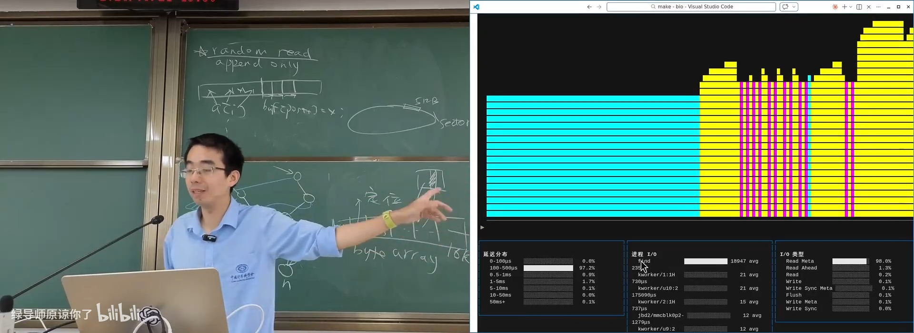
📷 块 I/O 可视化展示进程、类型与延迟分布
回到原视频 (01:18:30)
9. 总结：最终胜出的仍然是电子
从磁带、磁盘到光盘，再到 Flash：
- 磁和坑都能持久保存 bit；
- 机械定位带来毫秒级随机访问延迟；
- 光学挖坑适合低成本复制，却不适合随机写；
- Flash 的密度、速度和集成电路制造优势最终使其胜出；
- Flash 有磨损问题，需要 FTL 和 Wear Leveling；
- 所有存储设备最终向操作系统暴露为块数组；
- 文件系统再把块设备抽象成字节序列、文件和
mmap。
flowchart LR
A["Tape"] --> B["Drum"]
B --> C["Disk"]
C --> D["Floppy"]
D --> E["Optical Disc"]
E --> F["Flash / SSD"]
F --> G["Block Device"]
G --> H["File System"]
课程的最终结论：
物理限制无法突破，但可以用软件重新组织数据来隐藏或分摊代价。Random Read + Append-only Write 的模式足以实现任何数据结构；理解这一原理，可以在 FTL、文件系统甚至新的非易失存储出现时推导出新的系统设计。
附：官方参考与延伸阅读
- GPIO LED
- 磁带与磁性存储历史资料
- 软盘驱动器视频
- CD-RW 原理
- Project Silica Nature Paper
- Project Silica Video
- Bunnie: SD Card Internals
- Linux Block I/O 实验
- SSD Guide
- Coding for SSDs
- OSTEP Chapter 37: Hard Disk Drives
- OSTEP Chapter 44: Flash-based SSDs
官方课程资料：
版权与署名：本讲课程材料由蒋炎岩（jyy）编写。课程讲义与幻灯片采用 Creative Commons BY-NC 4.0 许可；本电子书保留课程出处、作者署名与许可说明。